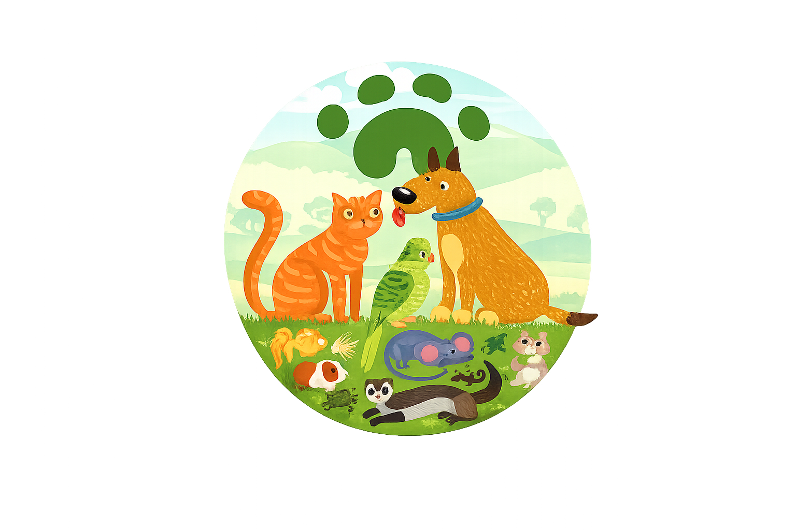

128
Rol administrador · Acceso total
Bienvenido/a administrador
Este es tu panel donde administras el sistema.

Resumen general
14
342
Consulta general
$1.450.000
8
Actividad reciente
| Fecha | Usuario | Acción |
|---|---|---|
| 02-09-2026 | Pedro Salgado | Confirmó la cita de Javiera Contreras |
| 01-09-2026 | Marcela Iturra | Creó el usuario Rodrigo Neira |
| 31-08-2026 | Pedro Salgado | Reagendó la cita de Rocky (perro) |